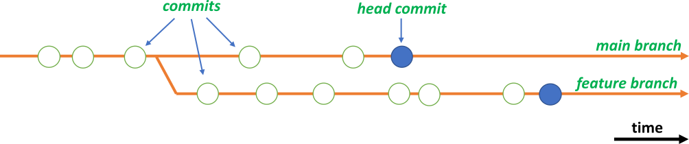

Branching
A Git repository can hold multiple file trees that evolve in parallel. These are called branches. This may sound confusing: how can trees be branches? The reason is that the word “branch” refers to a bifurcation in the graph of commits (a commit adds a set of changes to a repository), not to a subdirectory of a file tree.
{kind=link}

Up until the bifurcation, the branch and its parent branch share the same commit history. After the bifurcation, they diverge with different commits made to each. Logically, a new branch is a copy of the parent branch, but no actual data needs to be copied to bifurcate the commit graph: branching is very cheap.
One reason for branching is to start a parallel track of development, for example to implement an experimental feature in code, or to adapt a dataset for an exceptional use case. You can also branch in support of a release workflow, branching from the main/master branch on a major release, and applying only commits that fix bugs to that branch, resulting in one or more minor/patch releases. There are many reasons to branch, and many workflows that can be enabled by that. To learn more, see the Branching Workflows section of the Pro Git book.
Commits made to one branch can be applied to another branch in the same repository thereby reducing divergence, for example to consolidate a feature developed in a feature branch into the main/master branch. This is called merging or, when preserving a linear history, rebasing. You can also be selective and cherry pick commits. Git offers advanced algorithms and assistance that make it practical to converge branches.